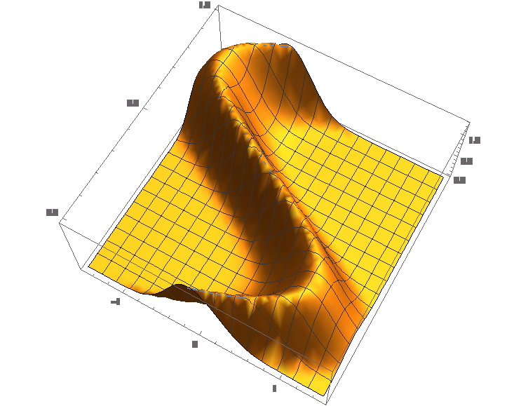
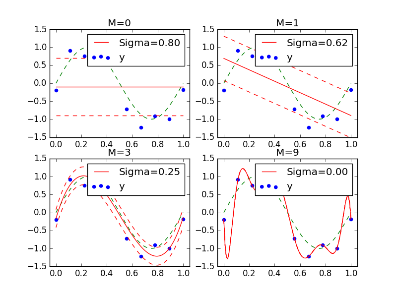
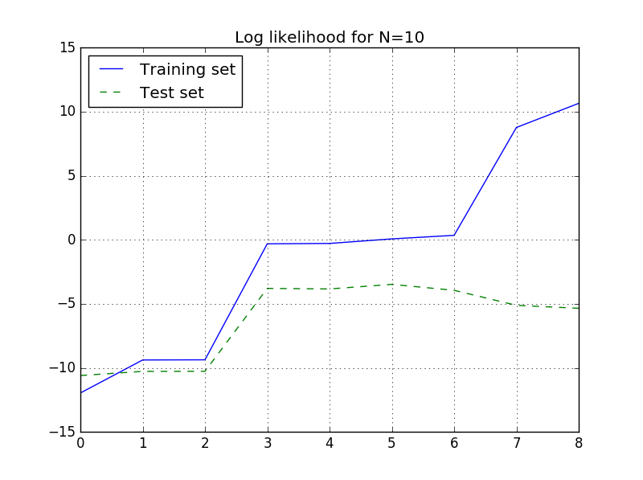
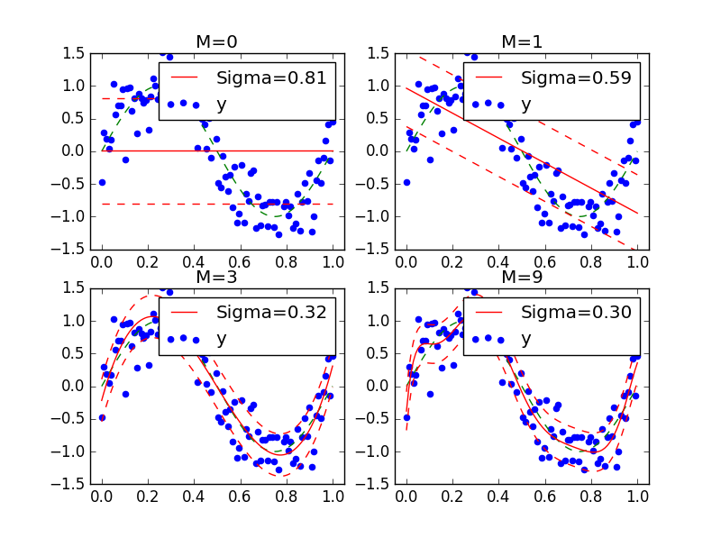
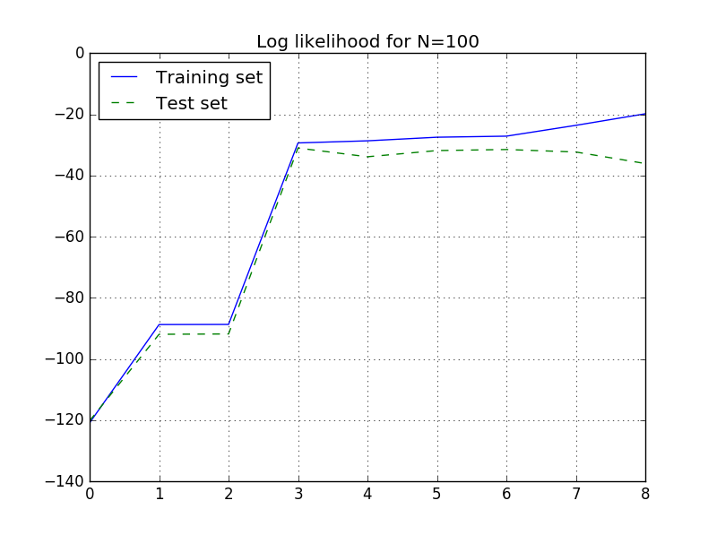

第3章 最尤推定法 Maximum Likelihood Estimation¶
- 日時： 2016年08月24日（水） 19:30～21:00
- 場所： マネーフォワード株式会社
- 発表者： 藤井 一郎
- 内容: 最尤推定法を用いた回帰分析
3.1 確率モデルの利用¶
最尤推定法： あるデータが得られる確率が最大となるようなパラメータを推定
（1） パラメータを含むモデル（数式）を設定する
（2） パラメータを評価する基準を定める
（3） 最良の評価を与えるパラメータを決定する
3.1.1 「データ発生確率」の設定¶
パラメータを含むモデル（数式）を設定する：
(1)データの背後にはM次多項式の関係があり、さらに標準偏差 \sigma の誤差が含まれている
\begin{split}\it{f}(x) &= w_0 + w_1 x + w_2 x^2 + \cdots + w_M x^M \\ &= \sum_{m=0}^M w_m x^m\end{split}(2)観測点 x_n における観測値 t は、f(x_n) を中心としておよそ f(x_n) \pm \sigma の範囲に散らばる
(平均 f(x_n)、分散 \sigma の正規分布)
\it{N} ( t | f(x_n), \sigma^2 ) = \frac{1}{\sqrt{2 \pi \sigma^2}} e^{- \frac{1}{2 \sigma^2}(t - f(x_n))^2}この２つの式の w_m と \sigma とを推定する。
最小二乗法との違い：データに含まれる誤差を合わせて推定する

3.1.2 尤度関数によるパラメーターの評価¶
パラメータを評価する基準を定める
評価方法 = 尤度関数： トレーニングセットに含まれるデータ \left \{(x_n,t_n) \right \}^N_{n=1} が得られる確率 (パラメータは w_m と \sigma )
\begin{split}P &= N(t_1| f(x_1),\sigma^2) \times \cdots \times N(t_N| f(x_N),\sigma^2) \\ &= \prod_{n=1}^{N} N(t_n| f(x_n),\sigma^2)\end{split}「最尤推定法」
- 「観測されたデータ（トレーニングセット）は、最も発生確率が高いデータに違いない」との仮説
- 確率Pが最大になるようなパラーメータを推定
- 尤度関数の最大値問題
\begin{split}P &= \prod_{n=1}^{N} \frac{1}{\sqrt{2 \pi \sigma^2}} e^{- \frac{1}{2 \sigma^2}(t_n - f(x_n))^2} \\ &= \left (\frac{1}{2 \pi \sigma^2} \right )^{\frac{N}{2}} Exp \left [- \frac{1}{2 \sigma^2} \sum_{n=1}^{N} \{t_n - f(x_n)\}^2 \right ]\end{split}ここで 自乗誤差 E_p = \frac{1}{2} \sum_{n=1}^{N} \{ f(x_n) - t_n\}^2 \}
P = (\frac{1}{2 \pi \sigma^2})^{\frac{N}{2}} e^{- \frac{1}{\sigma^2} E_p}ここで \beta = \frac{1}{\sigma^2} とし、 E_p とパラメータ w の依存関係を明示
P(\beta,w) = (\frac{\beta}{2 \pi})^{\frac{N}{2}} e^{- \beta E_p(w)}これを最大にするパラメータ (\beta,w) を求める。
この尤度関数 [1] は単調増加関数なので対数をとっても単調増加する。（対数尤度関数）
[1] 勉強会終了後懇親会で尤度関数は単調増加ではないのでは？との質問があったが、尤度関数は指数関数なので単調増加関数。 ln P(\beta,w) = \frac{N}{2}ln \beta - \frac{N}{2} ln 2 \pi - \beta E_p(w)対数尤度関数を最大化する条件：
\begin{split}\frac{\partial (ln P)}{\partial w_m} &= 0 \qquad (m = 0, \cdots, M) \\ \frac{\partial (ln P)}{\partial \beta} &= 0\end{split}
- w_m について：
- \frac{\partial E_p}{\partial w_m} = 0 \qquad (m =0, \cdots,M)
これは自乗誤差を最小にする条件と同じ：
多項式の係数 \{w_m\}_{m=0}^{M} は最小二乗法と同じ
\begin{split}\sum_{n=1}^{N} \left ( \sum_{m'=0}^{M} w_{m'} x_n^{m'} -t_n \right ) x_n^m = 0 \\\end{split}\sum_{m'=0}^{M} w_{m'} \sum_{n=1}^{N} x_n^{m'} x_{n}^{m} - \sum_{n=1}^{N} t_n x_n^m = 0\begin{split} \Phi = \left ( \begin{array}{llll} x_1^0 & x_1^1 & \cdots & x_1^M \\ x_2^0 & x_2^1 & \cdots & x_2^M \\ \vdots & \vdots & \ddots & \vdots \\ x_N^0 & x_N^1 & \cdots & x_N^M \\ \end{array} \right )\end{split}w^{\mathrm{T}} \Phi^{\mathrm{T}} \Phi - t^{\mathrm{T}} \Phi = 0w = (\Phi^{\mathrm{T}} \Phi)^{-1} \Phi^{\mathrm{T}} t
\beta について：
\frac{1}{\beta} = \frac{2 E_p}{N}\begin{split}\sigma &= \sqrt{\frac{1}{\beta}} = \sqrt{\frac{2 E_p}{N}} = E_{RMS} \\ &= \sqrt{\frac{1}{N} \sum_{n=1}^{N} \left ( \sum_{m=0}^{M} w_m x_n^m -t_n \right )^2 }\end{split}これは最小二乗法の平方根平均自乗誤差
最小二乗法とは異なるアプローチで計算したが、得られた多項式は同じ
最小二乗法は最尤推定法の中でも正規分布の誤差を仮定した特別な場合
3.1.3 サンプルコードによる確認¶
計算結果：
- (1)N=10での結果
- 
対数尤度の変化を見ることでオーバーフィッティングを調べることができる
- (2)N=100での結果
-  
3.2 単純化した例による解説¶
3.1節では複数の観測点における観測値の予測を行った。 この節では、ある観測点に固定して、繰り返し観測値を取得したデータから平均 \mu 、標準偏差 \sigma を最尤推定法で推定してみる。
\begin{split}\mu &= \frac{1}{N} \sum_{n=1}^{N} t_n \qquad (標本平均） \\ \sigma^2 &= \frac{1}{N} \sum_{n=1}^{N} ( t_n - \mu)^2 \qquad (標本分散）\end{split}推定値（標本分散）は実際の値（母分散）よりも小さくなる傾向がある。（偏りがある）
偏りをなくすために推定値より大きくしてやる（不偏推定量）
\sigma^2 = \frac{1}{N-1} \sum_{n=1}^{N} ( t_n - \mu)^2 \qquad (不偏分散）なぜ、 N ではなく N-1 で割るか？
計算式の中に標本平均が含まれているので、 (N-1) 個の観測データがあれば他のひとつの観測データは正確に値が決められる状態になる。（自由度が N-1)
(厳密な証明は割愛)
参考URL：¶
- 人工知能に関する断創録 最尤推定、MAP推定、ベイズ推定 http://cp.the-premium.jp/
- 最尤法によるパラメータ推定の意味と具体例 | 高校数学の美しい物語 http://mathtrain.jp/mle
- （おまけ） イラストでわかる自由度と不偏分散 http://home.a02.itscom.net/coffee/tako08Annex2.html